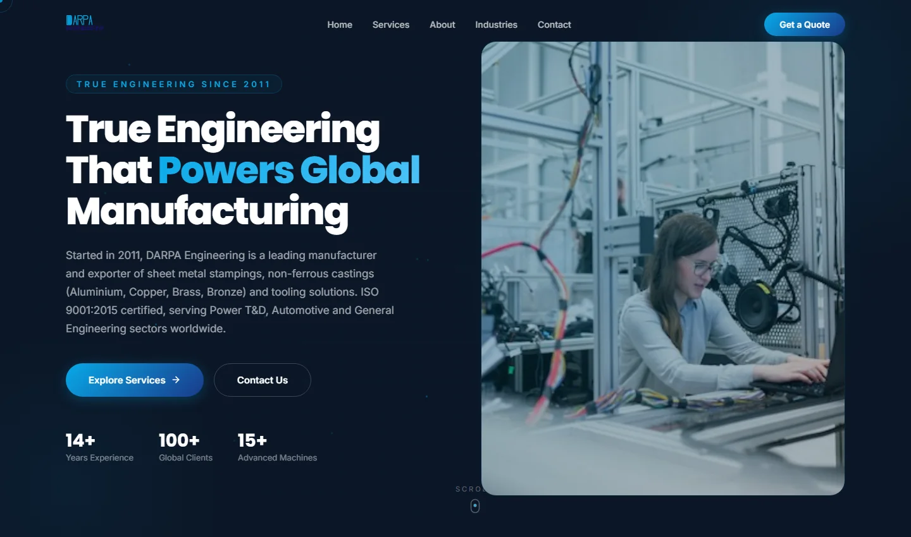

DARPA Engineering
The idea
Present an engineering company through a clear page structure: an introduction, capabilities, process, industries, and a contact path. The project explores how a consistent visual system can help visitors navigate a long corporate website.
How the interface is built
The public implementation uses React and Framer Motion. App.jsx composes separate sections including Hero, Services, About, Process, Industries, Gallery, FAQ, and Contact. Navigation, loading, and scroll-progress components support the overall experience.
Design and engineering choices
A restrained blue palette, typography, engineering imagery, and repeated section patterns connect the interface. Modular sections make it easier to change the order or update information while keeping the presentation consistent.
What the evidence shows
This page describes the public source at commit c6f6f84, which passed a local production build. The screenshot shows the interface as rendered from that code. Company statistics and testimonials inside the project are not verified customer results of this portfolio.
PUBLIC PROJECT / Content reflects the published scope reviewed in October 2026.